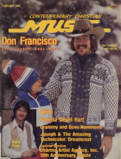

CMnexus
:
Contemporary Christian culture, music, and media.
Magazines
Profiles
Dove Awards
cmnexus.org
CM
nexus
→
Profiles
→
Writers: B
→
Paul Baker
Paul Baker
< -- Prev
ious
Next-- >
1
2
3
Writing credits listing
May 1975
in
Right On!
6.9
The Beautiful Zion Missionary Baptist Church Choir
-
In the Spirit
Caston & Majors
-
Caston & Majors
Jun 1975
in
Right On!
6.10
Joshua (1970s)
-
Joshua
Jamie Owens-Collins
-
Laughter In Your Soul
various artists -
Christian People Volume One
Jul 1975
in
Right On!
7.1
"Larry Norman Tells All"
Larry Norman
on activism, symbolism,
Bob Cull
-
Remember
2nd Chapter of Acts
-
In the Volume of the Book
Marj Snyder
-
Content in You
Randy Matthews
-
Now Do You Understand?
Malcolm & Alwyn
-
WildWall
Good News
-
Good News
Water Into Wine
-
Hill Climbing for Beginners
Mike Johnson
-
Gentle Spirit
Sep 1975
in
Right On!
7.2
Chuck Girard
-
Chuck Girard
Oct 1975
in
Right On!
7.3
The Way (folk)
-
Can It Be?
Karen Lafferty
-
Bird in a Golden Sky
Doug Howell
-
Bluer Than It's Ever Been
Nov 1975
in
Right On!
7.4
A Joyful Noise:
Al Perkins
Feb 1976
in
Right On!
7.6
Larry Norman
-
In Another Land
Randy Stonehill
-
Welcome to Paradise
Apr 1976
in
Right On!
7.7
[Advertisement]:
Love Song
May 1976
in
Right On!
7.8
A Joyful Noise:
Jessi Colter
Jul 1976
in
Radix
8.1
Randy Matthews
-
Eyes to the Sky
Mustard Seed Faith
-
Sail on Sailor
Parable
-
More Than Words
Lamb
-
Lamb III
David Meece
-
David
John Michael Talbot
-
John Michael Talbot
Nancy Honeytree
-
Evergreen
May 1977
in
Radix
8.6
"Home Where He Belongs"
B. J. Thomas
Apr 1978
in
The Saturday Evening Post
250.3
"Rock of Ages"
Jesus Music
history;
Ralph Carmichael
,
Ray Repp
,
Thurlow Spurr
,
Andrew Lloyd Webber
Apr 1979
in
The Saturday Evening Post
251.3
"Sharing the Limelight, Spreading the Word"
Pat Boone
&
Debby Boone
Jul 1979
in
Contemporary Christian Music
2.1
On The Air:
KFKZ
Nov 1979
in
Contemporary Christian Music
2.5
On The Air:
KBRN
Sep 1980
in
Group
6.7
"Rock 'n' Roll: Is It Unchristian?"
Christianity and rock music; images and perceptions;
Bob Larson
Dec 1980
in
Contemporary Christian Music
3.6
In Concert:
Rob Cassels
Jan 1981
in
Contemporary Christian Music
3.7
On The Air:
Christian Broadcasting Network
,
WXRI
Feb 1981
in
Contemporary Christian Music
3.8
"Can Preaching Be Hip?"
Mar 1981
in
The Saturday Evening Post
253.3
"Rock of Ages"
Contemporary
Catholic
Music,
Ray Bruno
,
Ron Ellis
,
Pat Boone
,
Dion DiMucci
,
Arlo Guthrie
,
John Michael Talbot
May 1981
in
Contemporary Christian Music
3.11
"From SWB With Love"
Scott Wesley Brown
Jun 1981
in
Contemporary Christian Music
3.12
"Short Programs For Music Formats"
Jan 1982
in
Contemporary Christian Music
4.7
Talent:
Petra
,
e (band)
"Getting Back to Basics With Steve Camp"
Steve Camp
Chris Christian
-
Just Sit Back
Super Gang
-
On The Record For Jesus

Feb 1982
in
Contemporary Christian Music
4.8
"The Traveler Goes West"
Don Francisco
John Michael Talbot
-
Troubadour of the Great King
James Ward
-
Faith Takes a Vision
Mickey & Becki
-
Love Song for Number Two
< -- Prev
ious
Next-- >
1
2
3
External Links
Contemporary Christian Music: Where It Came From, What It Is, Where It's Going
CMnexus
(noun)
The magazine index
of modern music
and Christianity
© 2011 CMnexus. Last updated August 2025.
Contact:
Rants and other correspondence to:
editor -AT- cmnexus
-DØT- org
About